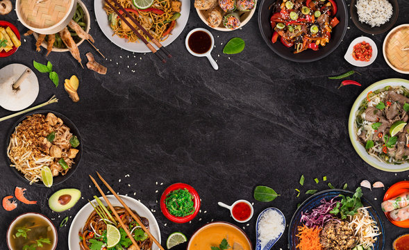
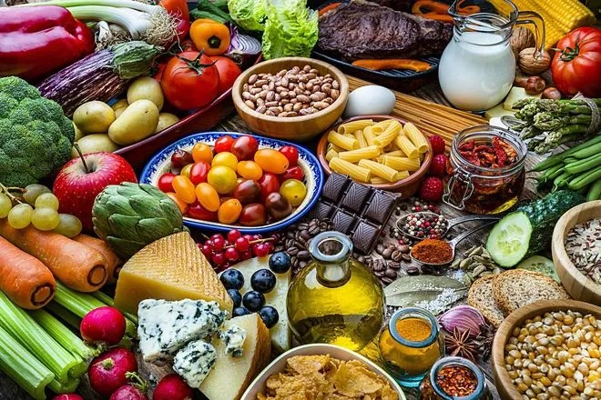
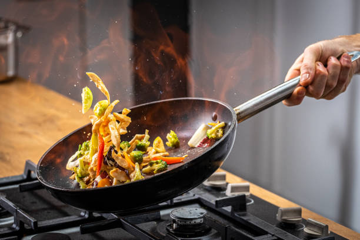

How to Make a Delicious Dish
Step-by-step guide to making a perfect meal at home.
Start Cooking
Ingredients You'll Need
2 cups of rice
1 onion, finely chopped
3 cloves of garlic
2 tablespoons of oil
Salt and pepper to taste
Optional spices: turmeric, cumin

Step-by-Step Instructions
Heat oil in a large pan over medium heat.
Add onions and garlic, sauté until golden brown.
Add rice to the pan and stir for 2-3 minutes.
Pour in 4 cups of water, add salt and pepper.
Cover the pan and let it simmer until the rice is fully cooked.
Serve hot and enjoy!
